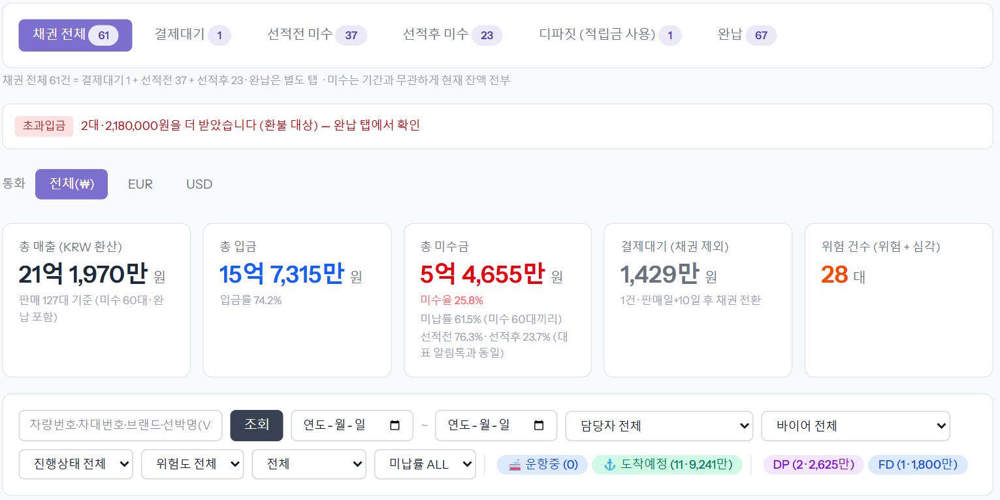

매입 현장부터 월정산까지,
차 한 대가 끊기지 않습니다
중고차 수출 회사의 운영 프로그램입니다. 영업은 휴대폰 board 에서 차를 사고, 사무실은 erp 에서 돈·서류·선적을 처리합니다. 둘이 이어져 있어 같은 차를 두 번 적지 않습니다.


10단계매입중에서 거래완료까지 자동 판정
서류 11종말소·통관·선적 서류 자동 기입
역할별 5화면내 일만 보이는 업무 대시보드
3사 운영 중같은 프로그램, 회사별 설정
일하는 자리에 맞춘 두 프로그램
현장과 사무실은 필요한 화면이 다릅니다. 그래서 둘로 나누고, 데이터는 잇습니다.
board
매입 현장 — 사기 전까지
영업 · 검차원 · 경매 담당 · 휴대폰 중심
- 매물 링크를 붙여 매입예정 등록
- 지역별 검차 배정과 사진·영상
- 바이어 견적 전달과 수락·거절
- 구매확정, 입금요청, 탁송 배차
- 내 정산·미수·선적을 보는 포털
erp
사무실 — 산 뒤부터 끝까지
관리 · 수출통관 · 재무 · 업무관리자 · 대표
- 매입 지급, 말소, 판매, 입금 확정
- 미수율에 따라 선적·B/L 을 막는 락
- 통관·선적 서류 자동 생성
- 채권 위험도와 회수 기록
- 담당자 정산과 월정산 결재
차 한 대의 여정
지금 어느 단계인지, 프로그램이 판정합니다
사람이 상태를 고르지 않습니다. 돈이 들어오고 서류가 붙으면 단계가 저절로 바뀝니다. 단계를 눌러 보세요.
서류 프로그램이 다루지 않는 것까지
서류를 뽑는 일은 기본입니다. 회사가 실제로 다치는 곳은 돈과 순서입니다.
🔒돈이 덜 들어오면 멈춥니다
미수율이 회사가 정한 기준을 넘으면 매입 등록·수출 진입·B/L 발급이 막힙니다. 열려면 승인과 사유가 남습니다.
💱외화와 환율 그대로
USD·EUR·JPY 등 통화별 입금과 환율을 줄마다 기록하고, 미수는 원화로 환산해 한눈에 봅니다.
🧾정산이 저절로 생깁니다
거래가 끝나면 담당자 정산이 만들어지고, 한 달치를 묶어 결재선을 따라 지급까지 갑니다.
🕵️누가 바꿨는지 남습니다
금액·날짜·승인은 감사 로그에 한글로 남고, 마감된 장부는 재조정 절차로만 고칩니다.
| 하는 일 | 서류 처리 프로그램 | erp + board |
|---|---|---|
| 차량 등록·말소·통관 서류 | 됩니다 | 됩니다 |
| 매입 전 단계(검차·견적·바이어 회신) | 범위 밖 | board |
| 입금 확정, 미수·채권 위험도 | 금액 기록 수준 | erp |
| 미수에 따른 선적·B/L 차단 | 없음 | erp |
| 선적일·ETA·B/L·서류 발송 | 선적일 기록까지 | erp |
| 담당자 정산·월정산 결재 | 없음 | erp |
| 쓰는 방식 | PC 에 설치, 같은 사무실 네트워크 | 웹 — 설치 없이 사무실 밖·휴대폰에서도 |
검토 필요 — 이 표는 공개된 타사 가이드를 읽고 만든 일반 비교입니다. 실제로 내보낼 땐 표현을 다시 확인해야 합니다. 관세사 연동·부가세 환급 서류는 저쪽에 있고 우리에겐 없는 것이라 표에 넣지 않았습니다.
먼저 눌러 보세요
board 에서 누른 버튼이 erp 화면에 어떻게 도착하는지 다섯 가지 흐름으로 볼 수 있습니다.